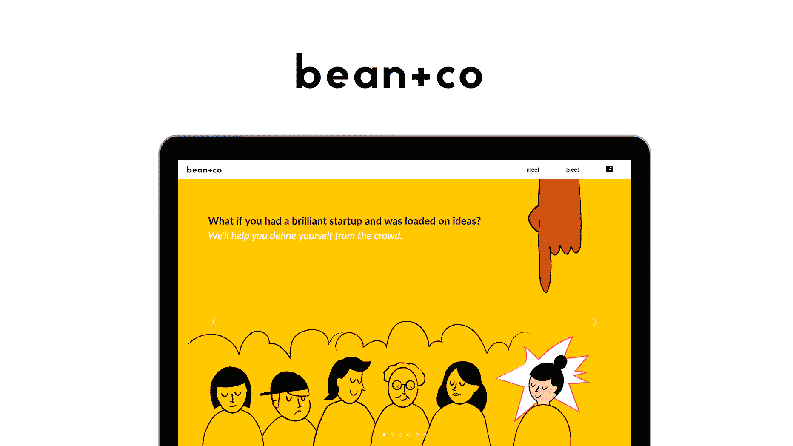

Reframing Fear
Print | Experimental
I explored how people could view the same matter in two perspectives in the form of a screenprinted poster with a zig-zag fold. The design shows how we might reframe fear into a source of love and courage.
Go to projectSubway People
Print | Illustration
This illustrations series is a product of my interest in people watching. Starting in the summer of 2014, I captured passengers in subways in Shanghai, Boston and New York to document my commute. I have launched an illustration book of the series. The second books is currently in the making.
Go to project

Bean + Co
Art Direction | Website Design
Bean and Co is an online agency covering the latest projects in photography, design and tech. As one of the founding members, I created the branding guideline for Bean + Co and designed the website for the agency. Aligned with our mission to make brilliant ideas soar and collaborate with clients, the Bean + Co brand is passionate, friendly and bold.
Check out website